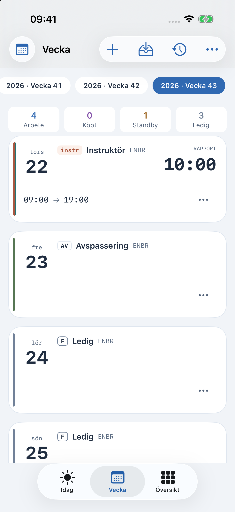
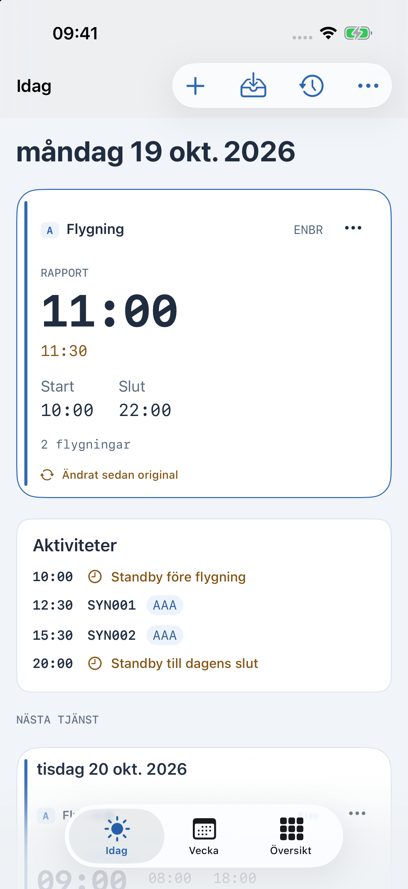
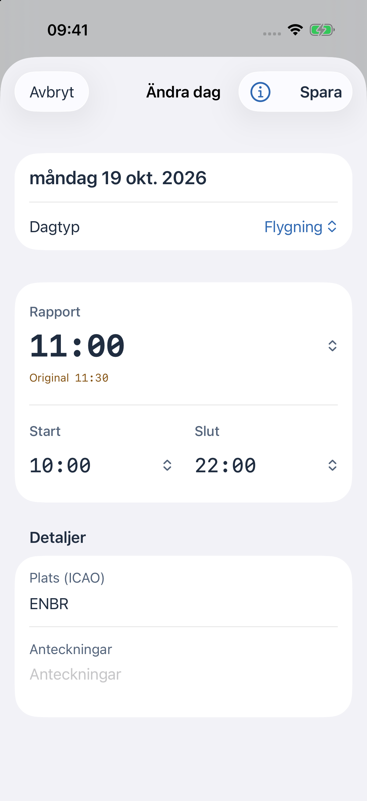

Nuvarande beta · iPhone, iPad och Apple Watch
CrewSchedule
Ditt schema.
I klartext.
Se dagens tider, planera veckan och följ ändringar i ditt schema.
Skärmbilderna visar ett fiktivt schema.


Schemat, med sin historik
Se vad
som ändrats.
Rapporttiden har flyttats från 11:30 till 11:00. Originaltiden finns kvar bredvid den nya, så att du kan jämföra.
Kom igång med automatisk import
iPhone. iPad. Apple Watch.
Ditt schema,
där du behöver det.
Behåll det personligt. Importera och använd schemat på enheten. iCloud-synk är valfri.
Välj din Kalender. Anslut kalendrar när du vill se schemaändringar där.
Ta med det till Watch. En parkopplad Apple Watch kan spara en egen kopia av schemat och visa nästa pass.
En planeringshjälp för schemat. Följ alltid arbetsgivarens aktuella instruktioner.
CrewSchedule · Nuvarande beta
Ett tydligare sätt
att hålla koll.
Fråga om att gå med i betan eller skicka en fråga om appen.
Fråga om betan